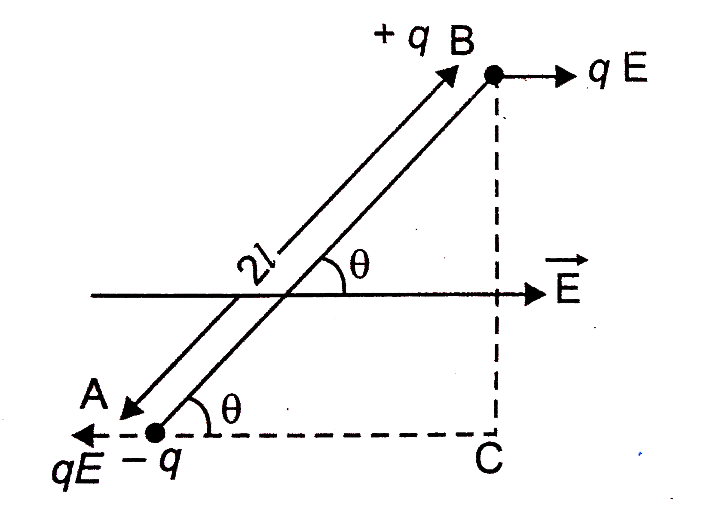
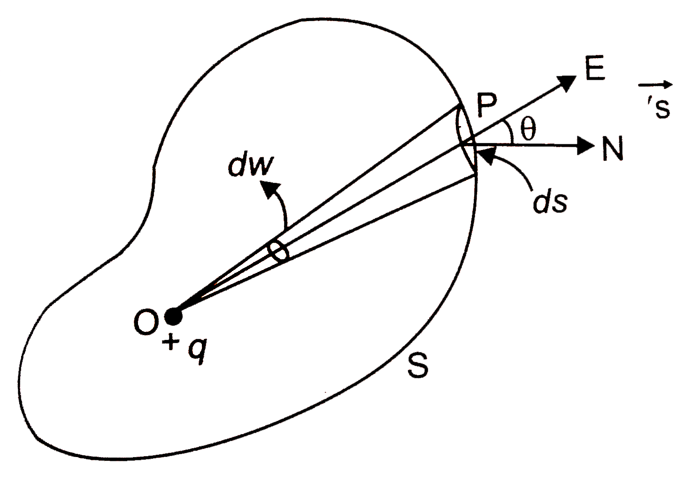

Q. What is Electricity? How many types of electricity are there?
Electricity is a form of energy that is produced due to the presence or motion of charged particles (electrons).
Electricity is mainly of two types:
1. Static Electricity:
In this type, electric charges remain at rest on the surface of an object and do not flow. It is produced by friction, induction, or conduction.
2. Current Electricity:
In this type, electric charges flow continuously through a conductor. It is obtained from sources such as batteries or generators.
Q. What is Electric Charge? How many types of charges are there?
Electric charge is a property of matter due to which it produces electrical and magnetic effects or is affected by them.
Electric charge is mainly of two types:
1. Positive Charge:
It is produced due to the deficiency of electrons.
2. Negative Charge:
It is produced due to the excess of electrons.
Q. State the Law of Conservation of Charge.
According to the law of conservation of charge, the total electric charge in an isolated system always remains constant. It can neither be created nor destroyed; it can only be transferred from one body to another.
Q. What is Frictional Electricity?
When two different materials are rubbed against each other, electrons are transferred from one material to the other, resulting in the production of electric charge. The electricity produced in this way is called frictional electricity.
Q. Why does an ebonite rod acquire a negative charge when rubbed with wool?
When an ebonite rod is rubbed with wool, electrons are transferred from the wool to the ebonite rod. Due to the gain of extra electrons, the ebonite rod becomes negatively charged.
Q. Why does a glass rod acquire a positive charge when rubbed with silk?
When a glass rod is rubbed with silk, electrons are transferred from the glass rod to the silk cloth. Due to the loss of electrons, the glass rod becomes positively charged.
Q. What is meant by Quantization of Charge? What is Elementary Charge?
Electric charge in nature always exists as an integral multiple of a fixed minimum value. This property is known as the quantization of charge. This minimum value of charge is called the elementary charge.
The smallest independent electric charge found in nature is called the elementary charge. It is equal to the magnitude of the charge on an electron or a proton.
Value of elementary charge:
\[
e = 1.6 \times 10^{-19}\,C
\]
Q. State Coulomb's Law on the basis of the Inverse Square Law.
According to Coulomb's law, the electrostatic force of attraction or repulsion between two point charges is directly proportional to the product of their charges and inversely proportional to the square of the distance between them.
In SI system,
\[
k=\frac{1}{4\pi\varepsilon_0}=9\times10^9\; \text{N m}^2/\text{C}^2
\]
Q. What is an Electric Field?
The region around a charged body within which its electric influence can be experienced is called the electric field.
Q. What is Electric Field Intensity? Write its SI unit.
Electric field intensity at a point is defined as the force acting on a unit positive charge placed at that point.
$$
E=\frac{F}{Q}
$$
SI Unit = Newton per Coulomb (N/C) or Volt per Metre (V/m)
Q. Derive the expression for the electric field intensity at a point due to a point charge.
Let \(Q\) be a point charge. We have to find the electric field intensity at a point \(P\), situated at a distance \(r\) from the charge.
A unit positive test charge is placed at point \(P\).
This is the expression for the electric field due to a point charge obtained from Coulomb's law.
Q. What is an Electric Dipole?
If two equal and opposite charges are separated by a very small distance, the combination is called an electric dipole.
The line joining the two charges is known as the dipole axis.
Q. What is Electric Dipole Moment? Write its SI unit.
The product of either charge and the distance between the two charges of an electric dipole is called the electric dipole moment. It is represented by \(P\).
$$
P=q\times2l
$$
It is a vector quantity and its direction is from the negative charge to the positive charge.
SI Unit = Coulomb metre (C·m)
Q. Derive the expression for the electric field intensity at an axial point of an electric dipole.
Consider an electric dipole \(AB\) consisting of charges \(-Q\) and \(+Q\) separated by a distance \(2l\). Let \(P\) be a point on the axial line at a distance \(r\) from the centre \(O\). We have to find the electric field intensity at point \(P\).
Assume a unit positive test charge is placed at point \(P\).
From the figure,
\[
AP=r+l\]
\[
BP=r-l
\]
Repulsive force exerted on P due to the charge \(+Q\)
Where,
\[
P=Q\times2l
\]
is the electric dipole moment.
Q. Derive the expression for the electric field intensity at an equatorial point of an electric dipole.
Consider an electric dipole \(AB\) consisting of charges \(-Q\) and \(+Q\) separated by a distance \(2l\). Let \(P\) be a point on the equatorial line at a distance \(r\) from the centre \(O\). We have to find the electric field intensity at point \(P\).
Assume that a unit positive test charge is placed at point \(P\).
From the figure,
\[
AP=BP=\sqrt{r^2+l^2}
\]
\[
\cos\theta=\frac{l}{\sqrt{r^2+l^2}}
\]
Electric field at point \(P\) due to charge \(+Q\):
Q. Derive the expression for the torque acting on an electric dipole placed in a uniform electric field.

Consider an electric dipole \(AB\) consisting of charges \(-Q\) and \(+Q\) separated by a distance \(2l\). It is placed in a uniform electric field \(E\) making an angle \(\theta\) with the direction of the field.
Due to the electric field, a force \(F=QE\) acts on the positive charge in the direction of the field, while an equal and opposite force acts on the negative charge.
These two equal and opposite forces act along different lines of action and hence form a couple.
The torque of the couple is
Torque = One Force × Perpendicular distance between the forces
From the right-angled triangle \( \triangle ACB \),
$$
\sin\theta=\frac{AC}{AB}
$$
$$
AB=2l
$$
$$
AC=2l\sin\theta
$$
Substituting in the torque equation,
$$
\tau=QE\times2l\sin\theta
$$
$$
\tau=(Q\times2l)E\sin\theta
$$
$$
\tau=PE\sin\theta
$$
Where,
\[
P=Q\times2l
\]
is the electric dipole moment.
Case I: If \(\theta=0^\circ\) or \(180^\circ\),
$$
\tau=0
$$
Case II: If \(\theta=90^\circ\),
$$
\tau_{\max}=PE
$$
Q. Calculate the work done in rotating an electric dipole through an angle θ in a uniform electric field and derive the expression for it.
Consider an electric dipole \(AB\) having electric dipole moment \(P\), placed in a uniform electric field \(E\). If the dipole makes an angle \(\theta\) with the direction of the electric field, then the torque acting on it is
$$
\tau = PE\sin\theta
$$
If the dipole is rotated through a small angle \(d\theta\), then the work done is
$$
dW=\tau\,d\theta
$$
$$
dW=PE\sin\theta\,d\theta
$$
Therefore, the work done in rotating the dipole from \(\theta=0\) to \(\theta\) is
$$
W=\int_{0}^{\theta}PE\sin\theta\,d\theta
$$
$$
W=PE\int_{0}^{\theta}\sin\theta\,d\theta
$$
$$
W=PE[-\cos\theta]_{0}^{\theta}
$$
$$
W=-PE[\cos\theta-1]
$$
$$
W=PE(1-\cos\theta)
$$
Case I: If \(\theta=0^\circ\),
$$
W=0
$$
Case II: If \(\theta=90^\circ\),
$$
W=PE
$$
Case III: If \(\theta=180^\circ\),
$$
W=2PE
$$
Q. What is the potential energy of an electric dipole? Derive its expression.
The potential energy of an electric dipole is the energy possessed by it due to its position in a uniform electric field. It is equal to the work done in bringing the dipole from its standard position to a given position.
Consider an electric dipole \(AB\) having dipole moment \(P\), placed in a uniform electric field \(E\). If it makes an angle \(\theta\) with the field, then the torque acting on it is
$$
\tau=PE\sin\theta
$$
The work done in rotating the dipole from the standard position \(\left(\theta=\frac{\pi}{2}\right)\) to an angle \(\theta\) is
Q. What are Electric Lines of Force? Write their properties.
Electric lines of force are imaginary lines drawn in such a way that the tangent at any point on a line gives the direction of the electric field at that point.
Properties of Electric Lines of Force:
1. Electric lines of force originate from a positive charge and terminate on a negative charge.
2. The tangent drawn to an electric line of force at any point gives the direction of the electric field at that point.
3. Two electric lines of force never intersect each other.
4. Electric lines of force form open curves. They start from a positive charge and end on a negative charge; they never form closed loops.
5. Where the electric lines of force are closer together, the electric field is stronger.
6. In a uniform electric field, the electric lines of force are parallel to each other and equally spaced.
7. Electric lines of force are always perpendicular to the surface of a conductor.
Q. Why do two electric lines of force never intersect each other?
If two electric lines of force were to intersect at a point, then two different directions of the electric field would exist at that point. However, the electric field at any point has only one unique direction. Therefore, two electric lines of force can never intersect each other.
Q. What is meant by Electric Flux?
The total number of electric lines of force passing normally through a surface placed in an electric field is called the electric flux associated with that surface. It is denoted by \(\Phi\) and is a scalar quantity.
If the electric lines of force enter the surface, the electric flux is negative. If they emerge out of the surface, the electric flux is positive.
Consider a surface \(S\) placed in an electric field \(E\), making an angle \(\theta\) with the normal \(n\) to the surface.
Therefore, the component of the electric field along the normal direction is:
$$
E\cos\theta
$$
Hence, the electric flux through the surface \(S\) is:
$$
\Phi = ES\cos\theta
$$
Case I: If the surface is parallel to the direction of the electric field \((\theta = 90^\circ)\)
$$
\Phi = ES\cos90^\circ = 0
$$
Case II: If the surface is perpendicular to the direction of the electric field \((\theta = 0^\circ)\)
$$
\Phi = ES\cos0^\circ = ES
$$
Q. State and prove Gauss's Theorem.
According to Gauss's Theorem, the total electric flux passing through any closed surface is equal to \(\frac{1}{\varepsilon_0}\) times the total charge enclosed within the surface.
$$
\Phi=\frac{Q}{\varepsilon_0}
$$
Proof

Consider a point charge \(Q\) placed at point \(O\) inside a closed surface \(S\). The electric field at a point \(P\), situated at a distance \(r\) from the charge, is